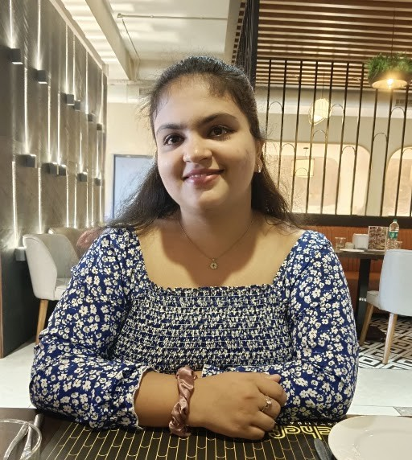

Building at the intersection of AI, data, and intelligent systems — moving from maintaining data pipelines by day to designing the models that run on them.

I'm an engineer who finds debugging, datasets, and late-night project ideas strangely exciting.
On weekdays, I work with enterprise data systems. In the evenings, I'm usually deep into my data science M.Tech, a field I love, or chasing a machine learning project that started with a simple curiosity and became a weekend-long adventure.
I ask a lot of questions and enjoy figuring things out. Occasionally, I enjoy sketching too, though my sketchbook has strong opinions about how many of those are actually art gallery worthy.
Built an end-to-end salary prediction pipeline using 250,000+ job records, performing exploratory data analysis, preprocessing, and feature engineering. Compared Multiple Linear Regression, Polynomial Regression, Ridge, Lasso, and Elastic Net, with Polynomial Regression achieving the highest CV R² and the lowest RMSE. The project explores how experience, education, company size, and location influence employee compensation.
Performed exploratory data analysis on 41,000+ banking records to understand the factors influencing term-deposit subscriptions. Identified actionable business insights, including the optimal number of customer contacts before subscription rates begin to decline, helping demonstrate how analytics can support campaign optimization.
Developed a content-based skincare recommendation system for 1,000+ products using TF-IDF vectorization and cosine similarity. Improved recommendation relevance through weighted feature engineering and an allergen-aware filtering layer, enabling personalized and safer product recommendations through an interactive Streamlit application.
Developed a multi-stage computer vision pipeline integrating YOLOv3 with a ResNet-50-based attribute recognition model to detect pedestrians and extract 12+ visual attributes. Built the complete detection-to-visualization workflow while exploring cross-dataset attribute analysis using the Market-1501 and DukeMTMC datasets.